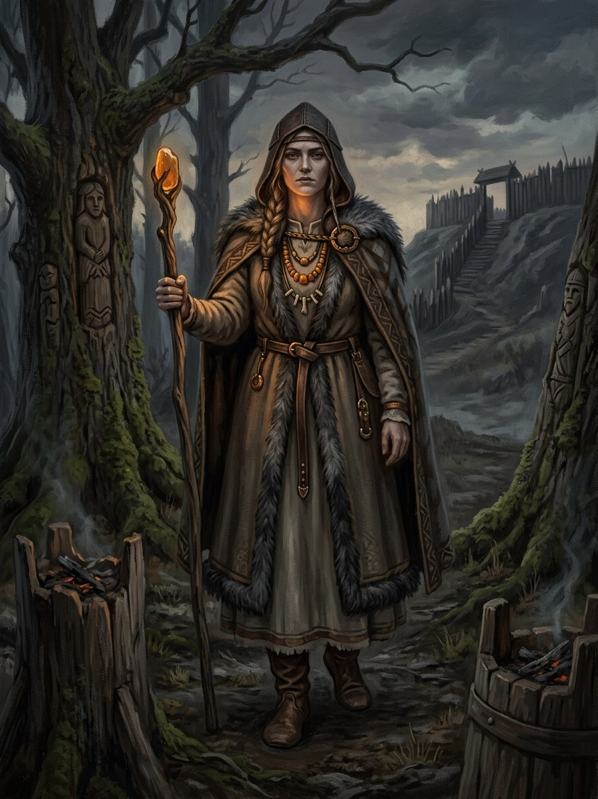

Saulė¶
Relations
Patron of: Gintarystė (amber-craft) — Amber = Saulė’s tears.
Spouse: Mėnuo — Folk (daina): the first spring.
Domain The Sun, mother of life
Layer God (Layer I) · Dangus, the Crown
Force-face None
Offerings Milk at dawn to a sun-wheel (saulutė); an offering whenever amber is taken from the shore
Taboos Taking amber after a storm without an offering: it goes cold for its whole life
Signs Amber, which is her tears; sun-wheels on lintels and vault keys; the smell of the warmth of the sun
Amber. Patron of Gintarystė. Every piece of amber is a drop of solar grief, which is why amber stores memory and carries workings.
Never speaks. She does not act, speak or appear.
Vengeance. She wept when Mėnuo left her for Aušrinė, and asked nothing.
Grief outlives her notice. Amber remembers what it witnessed and answers to the truth of whoever holds it.
The unoffered. Cold amber for the rest of its life.
Saulė

Saulė · god¶
Type |
god |
Note |
The Sun goddess; celestial mother, source of life, light, and warming grace. |
Folk sources [Historical record]¶
Saulė (Latvian Saule) is the Sun, a goddess in Baltic myth. The record is thin and mostly folkloric. The Lithuanian insert in the Ruthenian Malalas (c. 1261) says the smith Teliavelis forged the Sun and threw it into the sky. Jerome of Prague, reported in later Humanist retellings, described Lithuanians worshipping the Sun and an iron hammer used to free it from a tower (the zodiac legend). The Battle of Saule (1236) bears her name, though its link to sun-cult is unproven. The bulk comes from dainos (folk songs, many Latvian), collected from the 17th–19th centuries: Saulė’s golden clothes, her horses and boat; Mėnuo as her husband; Aušrinė and Vakarinė as daughters or servants; and a daughter Žemyna in some variants. Greimas and Beresnevičius give the framework.
Amber and tears: the saga says amber is Saulė’s tears. That is an overlay. The folk record ties amber to Jūratė’s shattered palace, and the Greek parallel is the Heliades’ tears (Ovid), not a Baltic source.
In the saga¶
Domain: the Sun, mother of life. Element: none directly. Force-face: none. She is patron of Gintarystė: every piece of amber is a drop of solar grief, which is why amber stores memory (Cosmology §3.1; magic rules §5.3). Her husband Mėnuo left her for Aušrinė, and her tears gathered in the sea became Jūratė’s palace.
She never acts, speaks or appears as a character. Her presence is the amber: Book I’s prologue is titled “Gintaro Ašaros” (“Amber Tears”); Birutė’s pebble and the kneeling statue carry it; and in Book VI ch. 29 Birutė throws a piece of Palanga amber into the fire at Algirdas’s death and the smell of “the warmth of the sun” fills the hill, “Saulės ašaros”. Weakness: none; she is indifferent, and the grief she left outlives her notice.
Offerings & taboos¶
Amber taken from the shore after a storm without an offering goes cold for its whole life (Palanga’s law, power systems). Sun-wheels (saulutės) carved on lintels and vault keys are her sign: Book II ch. 11, Book V ch. 20. Fed with milk at dawn.
Pronunciation¶
SOW-lay (IPA [ˈsɐʊlʲeː]), stress SAU-lė.
Connections¶
graph LR
gintaryste["Gintarystė (amber-craft)"]
menuo["Mėnuo"]
saule["Saulė"]
saule -->|Patron of| gintaryste
saule -->|Spouse| menuo
style saule stroke-width:3px